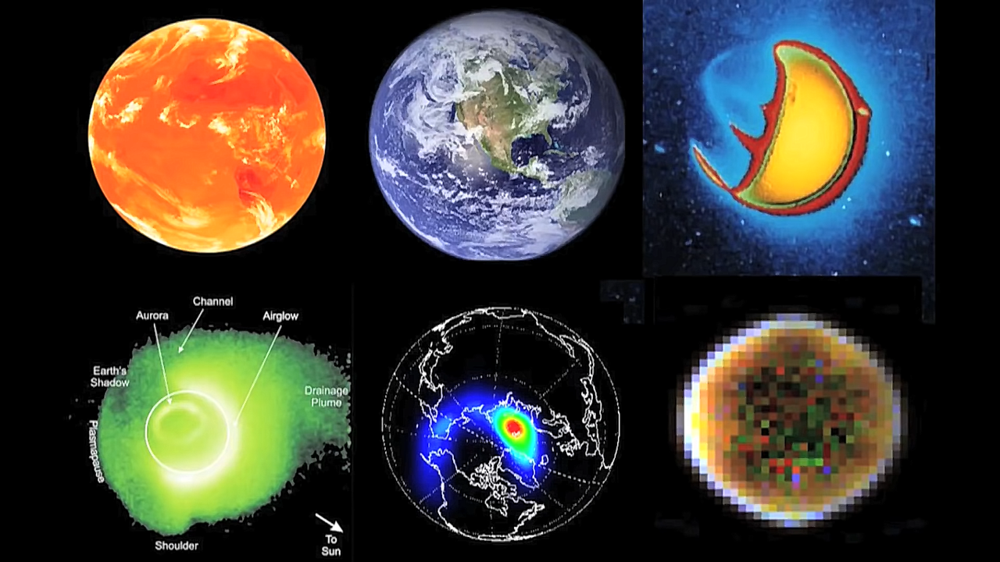
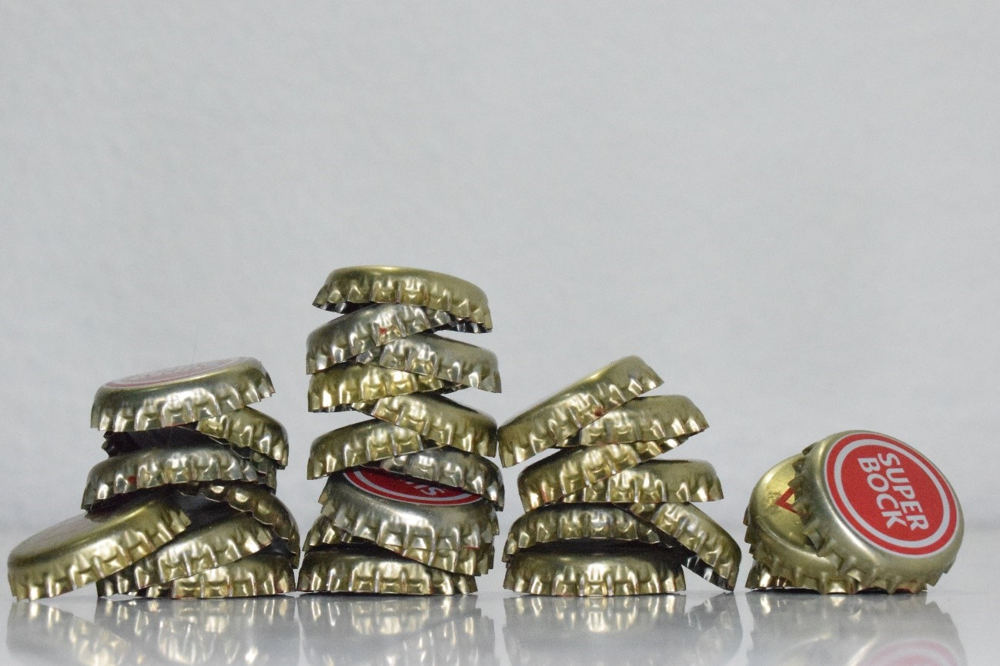

Pintura e Escultura
Qualia


Sempre tenho por base das minhas obra, de uma forma ou de outra, curiosidades científicas. Com essas ferramentas faço análises introspectivas, que acabam por ser mais interessantes que o próprio resultado.
Nesta obra, explorei o termo da filosofia "qualia". Os qualia são todas as qualidades subjetivas dos nossos sentidos. Por exemplo, duas pessoas observam a cor amarela, científicamente, o amarelo é definido por uma determinada onda do espetro magnético, que é depois refletida para os nosso olhos. Estes passam a informação ao cérebro que a interpreta e nos dá a sensação de amarelo. Mas apesar de ser a mesma cor que as duas pessoas observam, não é possível comprovar que essa onda nos dá a mesma sensação. O amarelo que um observa pode ser verde para o outro. Isto levanta questões filosóficas como o facto de existir uma verdade consensual de cores frias e cores quentes. Será que o amarelo é uma cor quente porque todos o vemos da mesma forma? Ou é quente porque associamos ao sol e ao fogo? Os qualia é essencialmente isto, é a incapacidade de descrevermos cor a um invisual ou som a um surdo. É por esta razão que utilizamos uma escala subjetiva de 0 a 10 para medir a intensidade da dor nos hospitais. Não há instrumento para medir os qualia.
Todas estas questões fizeram-me pensar que vivemos todos isolados nos nossos próprios cérebros. Na nossa versão do mundo. Não existe "a realidade", mas sim apenas a nossa própria realidade, individual. Estamos presos numa visão distorcida/filtrada/errada do que nos rodeia. Sim, porque se tivermos em conta todas as coisas que existem não detetáveis pelos nossos sentidos, chegamos à conclusão que o planeta Terra só tem o aspeto que tem, ao observarmos através do nosso instrumento, o cérebro.
Da esquerda para a direita, planeta terra visto através de infravermelhos, luz visível, ultravioleta, ultravioleta extremo, raio-x e raios gamma.
Ao questionar a minha própria realidade, senti me pequeno, mas sortudo por estar vivo e fazer parte da existência. Nesta obra, quero exprimir a minha gratidão por ter um cérebro apto para interpretar a complexidade que é a realidade. Tive conhecimento de uma tradição em Toraja na Indonésia que consiste em tratar os mortos como vivos durante o "estado de transição para a morte", ao qual os habitantes os categorizam como "doentes". Achei curioso, pois encarei os mortos apenas como pessoas sem capacidade de interpretar a realidade. A obra final é apenas o culminar de todas estas ideias e pensamentos, é um morto de Toraja que ganha uma explosão de sensações ao ter contacto com um cérebro, o nosso instrumento individual e único.
Mão da Entropia

Esta escultura faz parte de uma série feita com os meus colegas que consistia em tratar o tema da violência. Falar com 7 pedras na mão. Procurei encontrar formas menos obvias de violência, como é a guerra ou violência doméstica, quis encontrar o extremo da palavra. Tive como inspiração o filósofo Slavoj Žižek. Para ele, a violência pode ser algo bom, é apenas uma rutura do quotidiano, uma rutura do estado natural das coisas, ou do estado habitual. Podemos pensar então que existe uma zona de conforto, que muitas vezes nos incapacita de agir em prol das nossas convicções. E existe essa mudança violenta de sair da zona de conforto. Isso é uma violência positiva. Como por exemplo uma revolução pode ser considerada violenta, não porque houve feridos e mortos, mas sim porque houve uma mudança.

Žižek faz referência a uma cena do filme Fight Club: O personagem principal vai falar com o seu patrão e numa reunião atribulada ele começa a agredir-se a si próprio, violentamente até ficar em sangue. Esta cena é bastante simbólica no contexto do filme, pois este tem como premissa o facto de estarmos presos aos nossos trabalhos, à vida de escritório, às nossas posses, e estas acabam por nos possuir. Se estás infeliz, tens de mudar, tens de te agredir, tens de combater contra ti próprio e ser violento. Só quando já não houver nada a perder seremos felizes. "Losing all hope was freedom"
Foi nesta linha de pensamento que fiz a minha escultura, a auto-violência como meio de evolução pessoal. Utilizando uma pedra como se fosse uma moeda a ser dada, que representa a desassociação do nosso ego aos nossos objetos e posses, bem como uma imagem que representa uma figura desfocada, mais uma vez, uma representação de uma mudança pessoal violenta.
Sic Transit Gloria Mundi
Para conceber esta escultura, inspirei-me na artista Tara Donovan, que nas suas obras, utiliza materiais do quotidiano e procura transcendê-los. Fazer arte sem a necessidade de um conceito, apenas a procura da forma. O meu método de trabalho foi baseado no de Donovan no sentido em que, tal como ela, também eu peguei num objeto do quotidiano (carica), e fiz experiências até alcançar uma ideia consistente.
Esta obra representa a poluição do planeta e a inconsciência humana. Decidi construir um globo em que o seu interior está revestido de empilhamentos de caricas, que simbolizam todo o lixo que é enterrado no solo diariamente. Tentei fazer a minha escultura centrada no seu interior e não no seu exterior para simbolizar um problema que está presente, mas que não o temos em consideração pois não nos afeta diretamente. A única maneira de contemplar a escultura completamente é se nos aproximarmos, explorarmos o objeto ao roda-lo e espreitarmos através dos vários orifícios que eu inseri. Ou seja, metaforicamente, ganhar consciência do problema em causa.
Como titulo usei uma expressão latina que era proferida na cerimônias da coroação papal: “Sic transit gloria mundi”. Que traduz para: "Toda a glória do mundo é transitória". É interpretado como: "As coisas mundanas são passageiras". Em relação à minha escultura, quero transmitir que toda a glória do mundo, todas as conquistas notórias do século XX e XXI e o seu avanço tecnológico e industrial que permitem um estilo de vida confortável, tem consequências que estão a destruir, pouco a pouco, toda a glória vivida no mundo.